Valdar myndir
Litir, fólk og smá drama.
Engin tvö sjút þurfa að líta eins út. Hér er blanda af mjúku ljósi, beinu flassi, lituðu editorial-ljósi og fólki sem mætti ekki með tilbúnar pósur.
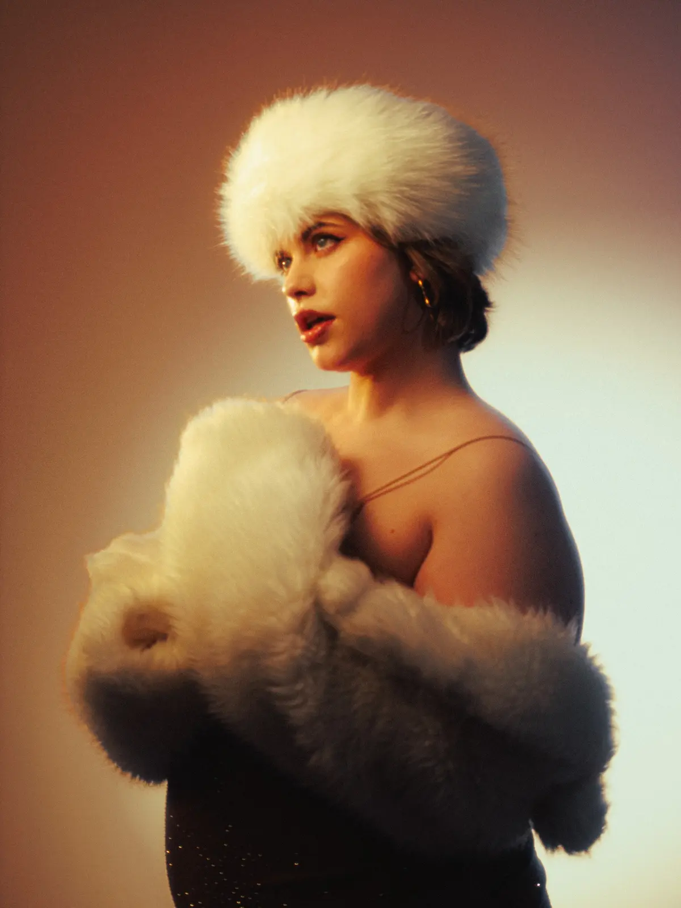
Editorial litir
Ljósið fær að taka pláss.
Beint, litríkt og aðeins skrýtið á góðan hátt.

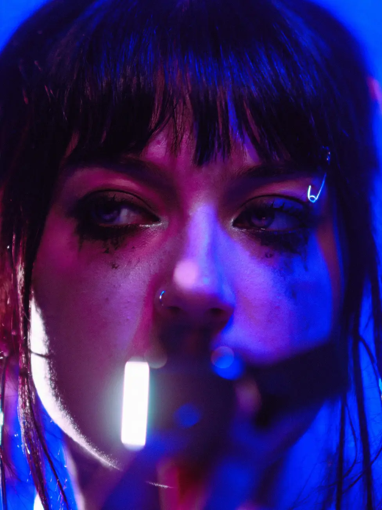

Úr sömu töku
Einn gítar. Fjórar gjörólíkar myndir.
Myndaserían má hanga saman án þess að við endurtökum sömu myndina.
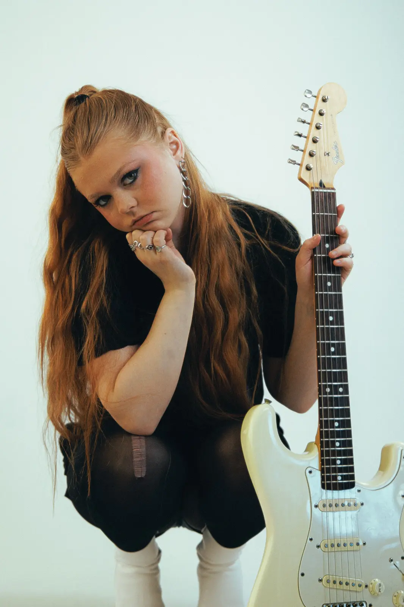

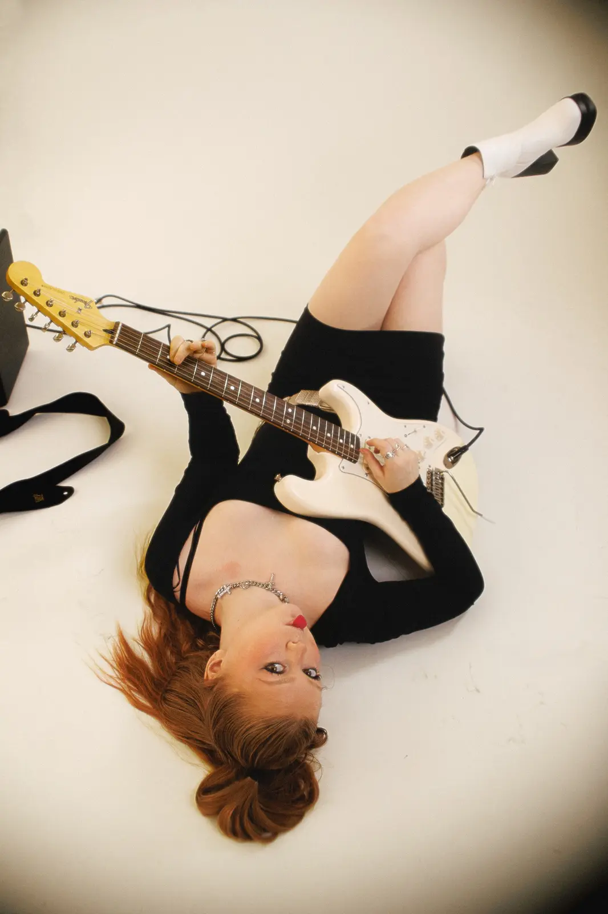
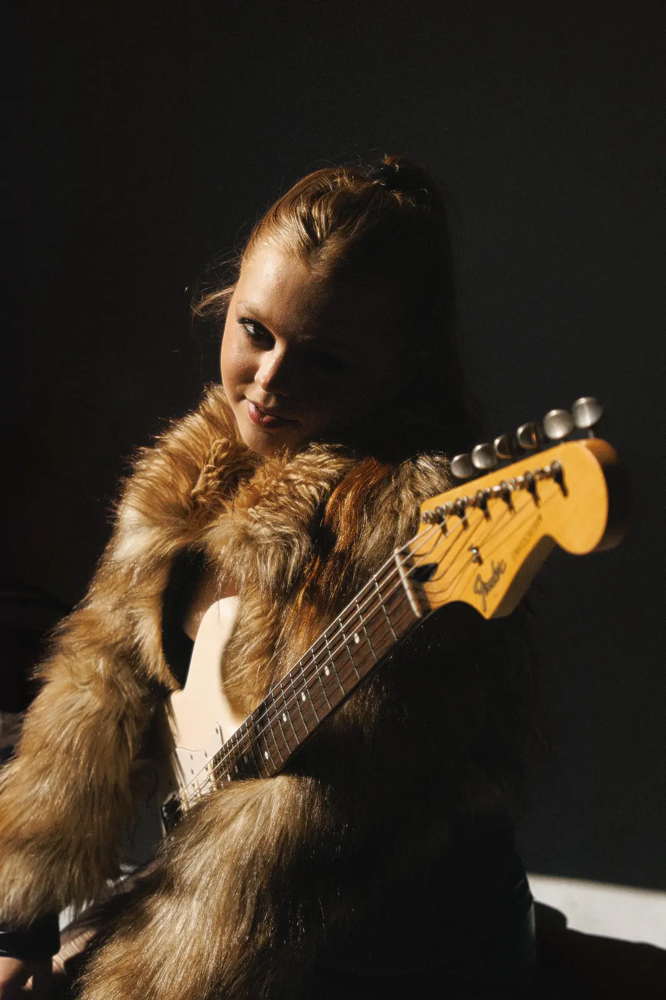
Hlýtt og glowy
Mýkra, en samt með karakter.
Hlý birta, smá hreyfing og augnablik sem líða ekki eins og uppstilling.
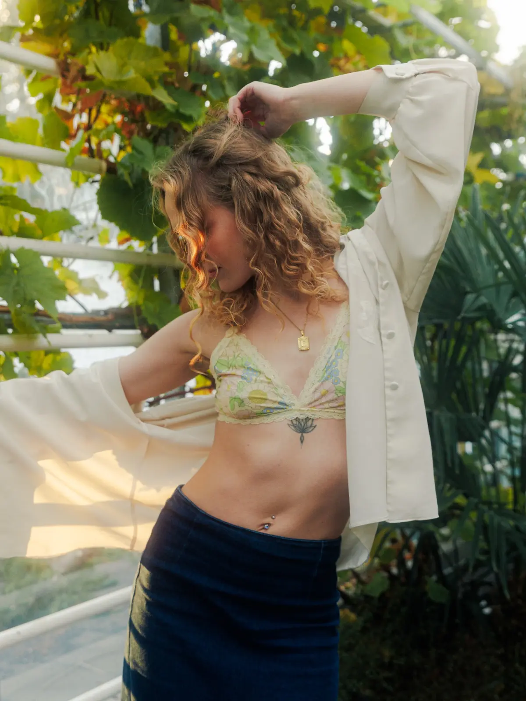
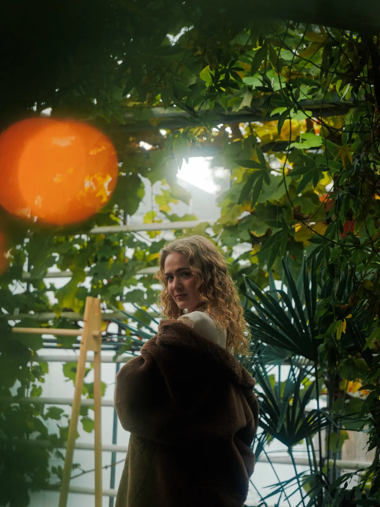

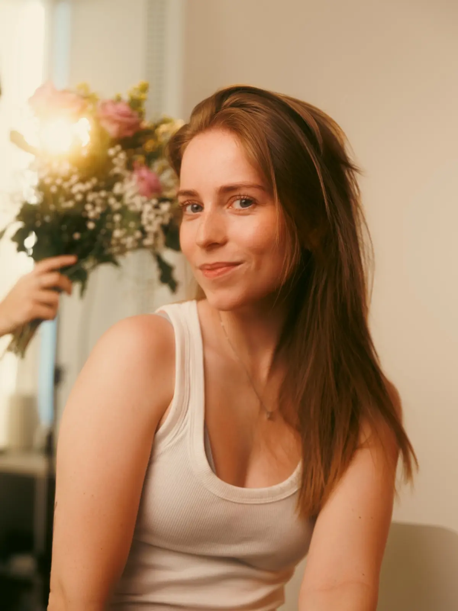
Saman í sjút
Vinkona með? Já takk.
Sameiginleg myndataka má vera bæði falleg og algjört kaos á besta hátt.

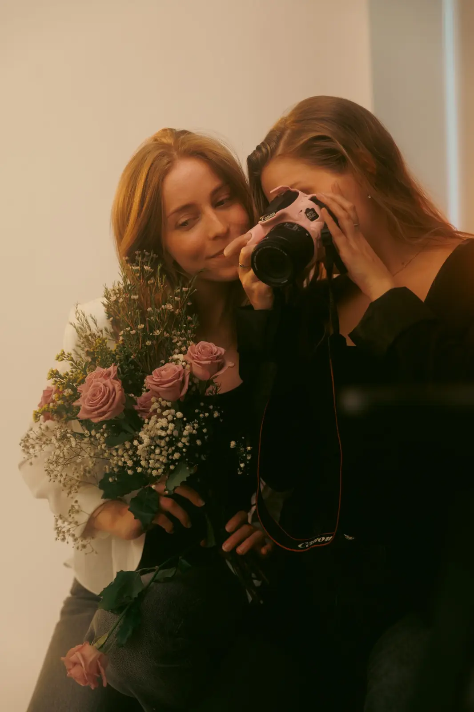
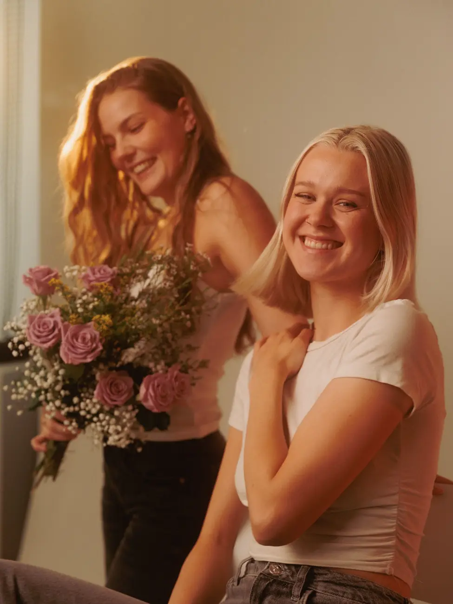
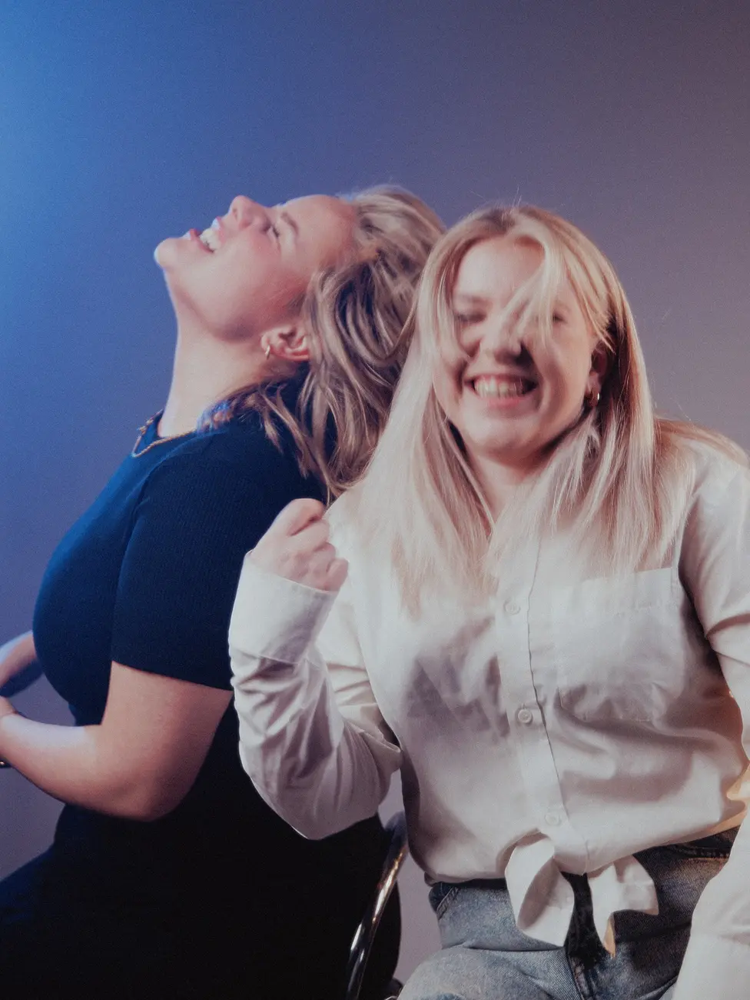
Þín sería
Viltu sjá þig hér?
Prófaðu verðleiðarann eða sendu mér hugmyndina sem er að malla.
Finna mitt sjút